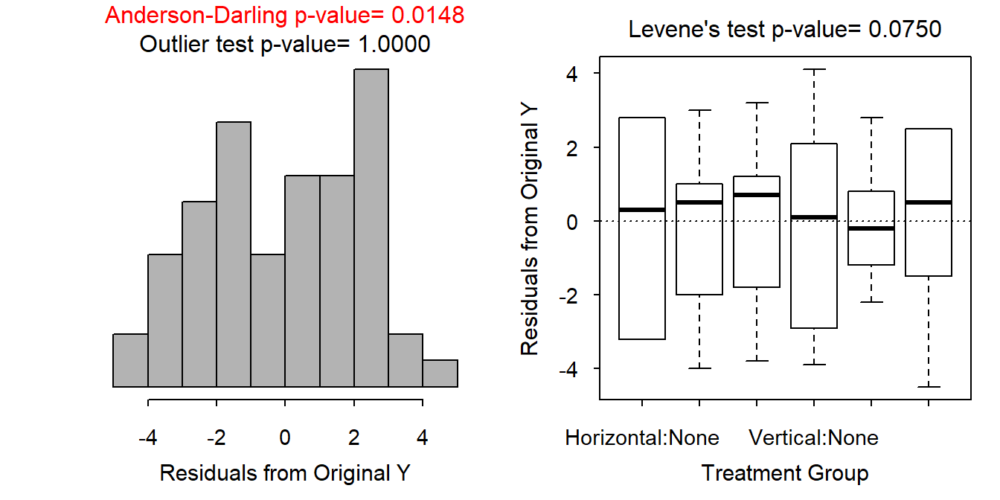
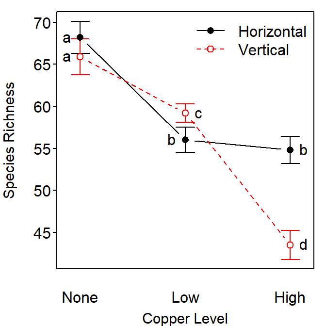

lm2) contains an interaction term and in the multiple comparisons method you are using main effects. The warning is a reminder that main effects should not be interpreted if you have an interaction effect in your model. However, the interaction is not significant in this example and, thus, does not overly influence the main effect tests. In this case, the warning can be ignored.
There is not enough information to determine if the individuals (a location) are independent within and among treatments. Independence within treatments would be suspect if the same copper treatment was assigned to adjacent locations or the same habitat orientation locations were adjacent. Independence among treatments would be suspect if different copper treatments were assigned to adjacent locations or different habitat orientations were at adjacent locations. For example, if the researchers found one vertical orientation and then split it into three parts to receive one of the copper treatments, then independence would be lost. There is no evidence either way with the given description so I will continue as if the individuals are independent.
On the original scale (Figure 1) the variances are equal (Levene’s p=0.0750), the residuals are not normal (Anderson-Darling p=0.0148) but mostly symmetric without long tails, and there are no significant outliers (p>1). The trial-and-error method did not suggest a transformation for species richness that resulted in more normal residuals without sacrificing the other assumptions. Given the symmetry and lack of long tails in the distribution of residuals, it appears that the assumptions for a two-way ANOVA have been largely met on the original scale with no individuals removed.
There is a significant interaction effect (p<0.00005; Table 1). Main effects will not be addressed in the presence of this interaction effect.
Summary plots of these results are in Figure 2.
Mean species richness is most (and significantly) different between the “No Copper and Horizontal Orientation” treatment and the “High Copper and Vertical Orientation Treatment” (Table 2). Specifically, mean species richness was between 21.6 and 27.8 greater at the “No Copper and Horizontal Orientation” treatment than at the “High Copper and Vertical Orientation Treatment” (Table 3).
These results show that species richness generally decreased from locations with no copper to locations with low levels of copper, regardless of whether the location was oriented vertically or horizontally. Species richness further decreased when copper levels were increased from “low” to “high” in vertically-oriented locations but not in horizontally-oriented locations. Thus, copper appears to have negatively affected species richness of sessile organisms, but the effect differed depending on habitat orientation.
Table 1: Analysis of variance table for the two-way ANOVA of untransformed species richness of sessile organisms by copper treatment level and habiat orientation.
Df Sum Sq Mean Sq F value Pr(>F)
Orientation 1 180.3 180.27 32.212 5.619e-07
Copper 2 3207.4 1603.72 286.567 < 2.2e-16
Orientation:Copper 2 535.8 267.92 47.874 1.096e-12
Residuals 54 302.2 5.60 Table 2: Tukey’s multiple comparison results for the two-way ANOVA of untransformed species richness of sessile organisms by copper treatment level and habiat orientation.
Estimate Std. Error t value p value
None:Vertical - None:Horizontal = 0 -2.3 1.05795 -2.174015 2.665907e-01
Low:Horizontal - None:Horizontal = 0 -12.2 1.05795 -11.531730 0.000000e+00
Low:Vertical - None:Horizontal = 0 -9.0 1.05795 -8.507014 4.216094e-11
High:Horizontal - None:Horizontal = 0 -13.4 1.05795 -12.665999 0.000000e+00
High:Vertical - None:Horizontal = 0 -24.7 1.05795 -23.347028 0.000000e+00
Low:Horizontal - None:Vertical = 0 -9.9 1.05795 -9.357716 6.249445e-13
Low:Vertical - None:Vertical = 0 -6.7 1.05795 -6.333000 7.786989e-07
High:Horizontal - None:Vertical = 0 -11.1 1.05795 -10.491984 6.106227e-15
High:Vertical - None:Vertical = 0 -22.4 1.05795 -21.173013 0.000000e+00
Low:Vertical - Low:Horizontal = 0 3.2 1.05795 3.024716 4.175401e-02
High:Horizontal - Low:Horizontal = 0 -1.2 1.05795 -1.134269 8.648859e-01
High:Vertical - Low:Horizontal = 0 -12.5 1.05795 -11.815298 2.220446e-16
High:Horizontal - Low:Vertical = 0 -4.4 1.05795 -4.158985 1.498752e-03
High:Vertical - Low:Vertical = 0 -15.7 1.05795 -14.840014 0.000000e+00
High:Vertical - High:Horizontal = 0 -11.3 1.05795 -10.681029 2.664535e-15Table 3: Tukey’s multiple comparison confidence intervals for the two-way ANOVA of untransformed species richness of sessile organisms by copper treatment level and habiat orientation.
Estimate lwr upr
None:Vertical - None:Horizontal -2.3 -5.42630109 0.8263011
Low:Horizontal - None:Horizontal -12.2 -15.32630109 -9.0736989
Low:Vertical - None:Horizontal -9.0 -12.12630109 -5.8736989
High:Horizontal - None:Horizontal -13.4 -16.52630109 -10.2736989
High:Vertical - None:Horizontal -24.7 -27.82630109 -21.5736989
Low:Horizontal - None:Vertical -9.9 -13.02630109 -6.7736989
Low:Vertical - None:Vertical -6.7 -9.82630109 -3.5736989
High:Horizontal - None:Vertical -11.1 -14.22630109 -7.9736989
High:Vertical - None:Vertical -22.4 -25.52630109 -19.2736989
Low:Vertical - Low:Horizontal 3.2 0.07369891 6.3263011
High:Horizontal - Low:Horizontal -1.2 -4.32630109 1.9263011
High:Vertical - Low:Horizontal -12.5 -15.62630109 -9.3736989
High:Horizontal - Low:Vertical -4.4 -7.52630109 -1.2736989
High:Vertical - Low:Vertical -15.7 -18.82630109 -12.5736989
High:Vertical - High:Horizontal -11.3 -14.42630109 -8.1736989

Figure 1: Histogram of residuals (left) and boxplot of residuals by treatment group (right) for the two-way ANOVA of untransformed species richness of sessile organisms by copper treatment level and habiat orientation.

Figure 2: Interaction plot (mean species richness by treatment group) for the two-way ANOVA of untransformed species richness of sessile organisms by copper treatment level and habiat orientation. Treatment means with different letters are significantly different.
R Appendix.
library(NCStats)
library(multcomp)
df <- read.csv("https://raw.githubusercontent.com/droglenc/NCData/master/Sessile.csv")
df$Copper <- factor(df$Copper,levels=c("None","Low","High"))
lm1 <- lm(Richness~Orientation*Copper,data=df)
transChooser(lm1)
aov1 <- anova(lm1)
df$comb <- df$Copper:df$Orientation
lm2 <- lm(Richness~comb,data=df)
mc <- glht(lm2,mcp(comb="Tukey"))
summary(mc)
confint(mc)
fitPlot(lm1,change.order=TRUE,ylab="Species Richness",xlab="Copper Level")
addSigLetters(lm1,change.order=TRUE,lets=c("a","a","b","c","b","d"),pos=c(2,2,2,4,4,4))